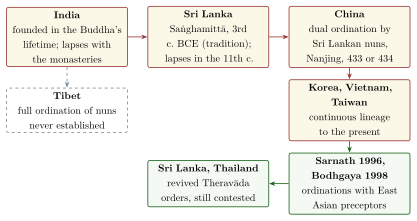

Chapter 13: Monks, Nuns and Householders: Religious Life in Practice¶
13.1 Renunciants and Householders¶
The earlier chapters of this volume have dealt mostly with doctrine: the teachings of the Buddha and Mahāvīra, the canons that preserve them and the philosophical schools that grew from them. This chapter turns to practice — to how monks, nuns and lay people actually lived these religions. Its subjects are the daily discipline of mendicants, the history of the orders of nuns, and the gifts, rites, pilgrimages and festivals through which lay people took part. These matters were not marginal. The great majority of Buddhists and Jains have always been householders, and both traditions survived or failed in each region according to how well their mendicants and their lay followers sustained one another.
Both traditions describe themselves as a fourfold community of monks, nuns, laymen and laywomen (Chapter 2, Section 2.14, and Chapter 11, Section 11.7). In both, the relationship between renunciants and householders rests on an exchange. Lay people give food, robes or cloth, lodging and medicine. Mendicants give teaching, an example of the religious life and, above all, an occasion for merit: in the standard Buddhist recollection of the Saṅgha, the community of disciples is called the unsurpassed “field of merit” (puññakkhetta) for the world, the soil in which a gift bears the richest fruit. Jain writers likewise praise the gift to a worthy recipient (supātra-dāna), and the Jain lay vows include giving to mendicants and guests (Chapter 11, Section 11.3.1).
The two traditions nevertheless regulated the exchange very differently. A Buddhist monk might accept an invitation to a meal cooked for him, and the Vinaya allows robes and lodgings to be given to particular monks. A Jain mendicant may not accept food prepared specially for him, because cooking involves harm to living beings and he must not be the cause of it. The Jain mendicant is therefore dependent on households that know and observe the rules, and the lay community must be trained to give correctly. As the final section of this chapter argues, this difference had large consequences.
Much of what follows draws on the work of scholars who have studied practice directly — in inscriptions, in monastic law codes read as working documents, and through fieldwork among living communities — rather than in doctrinal texts alone (Gombrich 1971; Schopen 1997; Cort 2001; Laidlaw 1995; Babb 1996).
13.2 The Buddhist Monastic Life¶
The structure and rules of the Vinaya and the categories of the Pātimokkha have been described in Chapter 3 (Section 3.2.2), and the Saṅgha’s procedures of collective decision in Chapter 2. This section describes how the rules shaped a monk’s life, chiefly on the basis of the Pāli Vinaya, noting where the other traditions differ (Gethin 1998; Harvey 2013).
13.2.1 Going Forth and Higher Ordination¶
Entry into the order takes place in two stages. The first is the “going forth” (pabbajjā) from home into homelessness. The candidate’s head and beard are shaved, he puts on the ochre robes, takes the three refuges and undertakes ten precepts (dasa sikkhāpada): the five precepts of the laity, with chastity in place of the avoidance of sexual misconduct, together with abstention from food after midday, from dancing, music and shows, from garlands, perfumes and ornaments, from high and luxurious beds, and from accepting gold and silver. He is then a novice (sāmaṇera). The Vinaya allows boys to be made novices at fifteen, and younger boys if they are old enough, in its phrase, to scare away crows.
The second stage is higher ordination (upasampadā), which makes the novice a full monk (bhikkhu). According to the Mahāvagga, the earliest disciples were admitted by the Buddha’s own words, “Come, monk”, and others for a time by the going for refuge; the Buddha then laid down that ordination must be conferred by the Saṅgha itself. The candidate must be at least twenty years old (a year counted, by an allowance of the Vinaya, from conception), must have a preceptor (upajjhāya), and must possess a bowl and robes. In the assembly he is questioned about “obstructing conditions”: whether he suffers from certain diseases, whether he is a human being, a man, a free man, free of debt and not in royal service, and whether his parents have given permission. The ordination itself is a formal act of the Saṅgha in which a motion is followed by three proclamations (ñatti-catuttha-kamma); if no one objects, the candidate is ordained. A quorum of ten monks was required in the “Middle Country” of the Ganges valley; the Vinaya relates that the elder Mahākaccāna, finding too few monks in Avanti, obtained permission for ordinations in the border regions with a quorum of five, one of them an expert in the Vinaya.
Immediately after ordination the new monk is told the four “resources” (nissaya) on which the life of a monk depends — food gathered on the alms round, robes made of discarded cloth, lodging at the foot of a tree, and fermented urine as medicine — with the reminder that better gifts may be accepted when they are offered; and he is told the four things that must never be done, which are the four pārājika offences. He then lives under the guidance of his preceptor or a teacher (ācariya) for at least five years.
Ordination in the Buddhist sense is not a vow for life. A monk who finds that he can no longer keep the rules may leave the order by formally renouncing the training, and this is not a sin. In Myanmar, Thailand and Laos it became customary for young men to spend a period, sometimes only a few weeks, as novices or monks before marriage; in Myanmar the novice ordination of a boy (shinbyu) is one of the great family festivals.
13.2.2 Robes, Bowl and the Daily Round¶
The monk’s possessions are few. The commentarial tradition lists eight requisites: the three robes, the bowl, a razor, a needle, a waist-band and a water-strainer. The three robes (ticīvara) are an inner robe (antaravāsaka), an upper robe (uttarāsaṅga) and a double-layered outer cloak (saṅghāṭī). The Vinaya relates that the Buddha asked Ānanda to make robes in the pattern of the rice-fields of Magadha, and the patchwork of strips and borders sewn into a monk’s robe still preserves that pattern. Robes were to be dyed with dyes made from roots, stems, bark, leaves, flowers and fruit, which gave them their ochre, brown or saffron colour. The bowl was to be of iron or of clay.
In the early morning the monk walks through the village on his alms round (piṇḍapāta), silently accepting whatever food is placed in his bowl. The Pātimokkha forbids solid food between midday and the following dawn, so the main meal is taken before noon. Meat is not forbidden in the Theravāda Vinaya, provided the monk has not seen, heard or suspected that the animal was killed for him. Devadatta’s demand that vegetarianism be made compulsory is one of the five demands the Buddha is said to have refused. East Asian monks, by contrast, became strict vegetarians, on the authority of Mahāyāna sūtras such as the Laṅkāvatāra and of the bodhisattva precepts, and with the support of the Liang emperor Wu in the early sixth century.
The rule against accepting gold and silver, and so money, caused difficulty from the start. Tradition holds that the Second Council at Vaiśālī (Chapter 3) was called because monks there accepted money from lay people. The Vinaya allows a lay steward (kappiyakāraka) to receive and manage funds on the monks’ behalf, an arrangement that, in many later monasteries, made the rule largely nominal.
The Vinaya also regulates lodging. It permits five kinds of dwelling, from a simple hut to a multi-storeyed building and a cave. Its best-known story of a gift is that of the merchant Anāthapiṇḍika, who bought the Jeta Grove at Sāvatthī from Prince Jeta by covering its ground with coins and gave it to the Saṅgha; a relief on the railing of the Bharhut stūpa shows carts unloading the coins, with an inscription naming the scene. The wandering life of the first disciples gave way, within a few centuries, to settled monasteries, and the cave monasteries of the Western Ghats and the brick vihāras of the Ganges plain are the visible result (see Volume 16, Vāstu–Śilpa).
13.2.3 The Monastic Year¶
The life of a monastery follows the lunar calendar. On the full-moon and new-moon days (uposatha) the monks within a monastic boundary (sīmā) assemble to recite the Pātimokkha; before the recitation, each confesses to a fellow monk any minor offence he has committed, so that the assembly is “pure”. Lay people come to the monastery on these days and on the quarter-moon days, take the eight precepts and listen to sermons.
The three months of the rains (vassa), beginning the day after the full moon of Āsāḷha (June–July), are spent in one residence. A monk may be absent for up to seven days for specified purposes, such as caring for a sick person, but otherwise must stay. A monk’s seniority is counted in “rains”, that is, in the number of retreats completed since his ordination. At the end of the retreat each monk, at the ceremony of “invitation” (pavāraṇā), invites the community to point out any fault it has seen, heard or suspected in him. In the following month comes the kaṭhina: lay people present cloth to the community, which must agree to give it to one monk and must cut, sew and dye it into a robe within a single day. The kaṭhina ceremony has become one of the main lay festivals of Theravāda countries, and the giving of the cloth is regarded as an especially meritorious gift.
13.2.4 Vinaya Lineages and the Monastery as an Institution¶
Six complete Vinayas survive. Besides the Pāli Vinaya of the Theravāda, four were translated into Chinese in the early fifth century — those of the Sarvāstivāda, Dharmaguptaka, Mahāsāṃghika and Mahīśāsaka schools — and the Vinaya of the Mūlasarvāstivāda survives complete in Tibetan, partly in Chinese (translated by Yijing) and in substantial Sanskrit portions among the Gilgit manuscripts found in 1931. A Sanskrit Vinaya for nuns of the Mahāsāṃghika-Lokottaravāda was among the manuscripts photographed in Tibet by Rahul Sankrityayan in the 1930s (Hirakawa 1990; Clarke 2014). The codes agree closely on the most serious offences and differ mostly in the number and detail of minor rules: the Dharmaguptaka code has 250 rules for monks and 348 for nuns, against 227 and 311 in the Pāli. These differences still matter. East Asian monks and nuns are ordained according to the Dharmaguptaka Vinaya, Tibetans according to the Mūlasarvāstivāda, and the Theravāda countries according to the Pāli; each lineage must be traced back through valid ordinations to the Buddha (Chapter 4, Section 4.9.1).
For a long time scholars took the Vinaya’s ideal of the propertyless wanderer as a description of Indian monastic life. Gregory Schopen has challenged that picture by reading the Vinayas, especially the very large Mūlasarvāstivāda Vinaya, alongside the inscriptions and the excavated remains of monasteries (Schopen 1997, 2004). The inscriptions at Bharhut, Sanchi and the western Indian caves show monks and nuns making substantial donations of their own, which presupposes that they had money. The Mūlasarvāstivāda Vinaya has rules for lending monastic funds at interest with written contracts, for the inheritance of a dead monk’s belongings and for monks’ funerals and memorial stūpas. Permanent endowments, whose interest paid for robes and other needs, are recorded in inscriptions such as Uṣavadāta’s deposit with the weavers’ guilds at Nasik (see Volume 19, Vāṇijya and Samudra). In the Gupta period and after, kings and wealthy donors granted whole villages to monasteries, as the Maitraka copper plates of Valabhī and the Nālandā grants show (Chapter 7). Shayne Clarke has argued that Indian monastic law codes did not require monks and nuns to sever ties with their families, as was long assumed, and that several of them envisage contact with, and even support of, relatives (Clarke 2014).
Scholarly Note: Texts and practice
Schopen’s work changed the study of Indian Buddhism, but it has its critics. The Mūlasarvāstivāda Vinaya on which he relies most is a north-western compilation of the early centuries CE or later, and it may describe the large, well-endowed monasteries of its own time and region rather than Indian Buddhism as a whole. The broader point is widely accepted: the Vinayas are working legal codes for institutions that owned property and dealt with the world, not only statements of an ascetic ideal (Schopen 2004; Clarke 2014).
13.2.5 Monastic Life beyond the Theravāda¶
The Mahāyāna never produced a Vinaya of its own. Mahāyāna monks and nuns were, and are, ordained under one of the older Vinayas, and in India they lived in the same monasteries as their non-Mahāyāna brethren. Yijing, writing in the late seventh century, observed that the two groups kept the same discipline and differed only in that Mahāyāna monks worshipped the bodhisattvas and read the Mahāyāna sūtras (Yijing (I-tsing) 1896). What the Mahāyāna added was a second set of commitments, the bodhisattva vows. The chapter on morality in the Bodhisattvabhūmi, part of the Yogācāra compendium attributed to Asaṅga, describes a threefold morality: restraint from wrongdoing, which includes the monastic or lay precepts; the cultivation of wholesome qualities; and action for the benefit of beings. It lists offences against the bodhisattva vow that are distinct from those of the Vinaya, such as refusing to teach or to give when asked (Williams 2009). In Tibet a monk came to hold three sets of vows at once — the monastic vows of the Vinaya, the bodhisattva vows and the vows of tantric initiation — and their relation became a subject of scholastic debate.
In East Asia, a set of bodhisattva precepts in the Fanwang jing (Brahmajāla Sūtra), a text probably composed in China in the fifth century, with ten major and forty-eight minor precepts, was taken by monks, nuns and lay people alike, emperors among them; it is the source of the strict vegetarianism of Chinese monasticism. In Japan the Tendai founder Saichō (767–822) argued that these precepts alone sufficed for the ordination of monks, and permission for such ordinations on Mount Hiei was granted just after his death. Japanese Buddhism moved further from the Vinaya model: the clergy of the Pure Land school of Shinran (1173–1263) married, and a government decree of 1872 permitting monks to eat meat and marry made a married, often hereditary, temple clergy the norm for most Japanese schools.
Tibetan monasticism took the opposite direction, towards very large celibate communities organised around scholastic study. The monastic colleges of the Gelug school built their curriculum on five Indian treatises: Maitreya’s Abhisamayālaṃkāra on the Perfection of Wisdom, Candrakīrti’s Madhyamakāvatāra, Dharmakīrti’s Pramāṇavārttika, Vasubandhu’s Abhidharmakośa and Guṇaprabha’s Vinayasūtra, studied over many years through memorisation and debate (Chapter 7). Alongside the monks, Tibetan religion also had non-celibate tantric practitioners, hereditary lineages of lamas such as the Khön family who lead the Sakya school, and, from the thirteenth century, the distinctive institution of recognised reincarnate teachers (tulku, sprul sku), of whom the Karmapas and later the Dalai Lamas are the best known (Samuel 1993). In the Kathmandu valley, the Newar Buddhists of the old monastic castes undergo a monastic initiation as boys and then return to lay life as married householders, the vajrācāryas among them serving as hereditary priests — a form of Buddhism that preserves the outward forms of the Indian monastery within a householder community (Gellner 1992).
Reformers in every Buddhist country have periodically protested against the wealth and worldliness of settled monasteries. In Sri Lanka the division between village-dwelling (gāmavāsī) and forest-dwelling (araññavāsī) monks became an enduring feature of the Saṅgha, and modern forest movements in Sri Lanka and Thailand present themselves as returns to the discipline of the early order.
13.3 The Order of Nuns in History¶
The founding of the order of nuns, the eight “weighty rules” and the questions they raise for the place of women are discussed in Chapter 2 (Section 2.14.2) and Chapter 14 (Section 14.8.2). This section follows the institution itself through its history (Figure 13.1).

India. Nuns are well attested in early Indian Buddhism. They appear in large numbers among the donors named in the inscriptions of Bharhut and Sanchi (2nd–1st centuries BCE), and some describe themselves as learned in the scriptures: Kuṣāṇa-period inscriptions name the nun Buddhamitrā as “knower of the three baskets” (trepiṭikā) (Schopen 1997). A nun’s higher ordination required a “dual” procedure: she was ordained first by a quorum of nuns and then by a quorum of monks. The survival of the order therefore depended on a continuous succession of ordained nuns, and once the succession was broken in a region, it could not be restored there from within. Nuns are much less visible in the inscriptions of the later first millennium, and the order seems to have disappeared in India with the monasteries.
Sri Lanka. According to the Sri Lankan chronicles, Aśoka’s daughter Saṅghamittā brought a branch of the Bodhi tree to the island and ordained Queen Anulā and her companions. The Dīpavaṃsa lists generations of nuns who taught the Vinaya at Anurādhapura, and nunneries are mentioned in the chronicles and inscriptions for many centuries. References to nuns cease after the tenth century. The order did not survive the disorders of the Chola occupation in the eleventh century; when King Vijayabāhu I restored the monks’ ordination with monks from Burma, the nuns’ lineage was not renewed.
China and East Asia. The first Chinese nuns, in the fourth century, were ordained by monks alone. A full dual ordination became possible only when Sri Lankan nuns reached China by sea. The Biographies of Nuns (Biqiuni zhuan), compiled by Baochang in the early sixth century, records that a first group of Sri Lankan nuns arrived at Nanjing in 429, and that when more arrived a few years later, led by a nun named Tessarā, they ordained several hundred Chinese women, together with a chapter of monks, in 433 or 434 (Tsai 1994). From China the lineage passed to Korea and Vietnam, and it has continued without break; in Taiwan today nuns outnumber monks.
Southeast Asia and Tibet. Inscriptions of Pagan appear to mention nuns as late as the thirteenth century, but no Theravāda nuns’ lineage survived into the modern period. In Tibet, the full ordination of nuns was never established, since the dual procedure required nuns of the Mūlasarvāstivāda lineage who were not available; Tibetan nuns have been novices (śrāmaṇerikā) only.
Renunciant women without full ordination. In the absence of the order, women in the Theravāda countries created other forms of renunciant life: the ten-precept mothers (dasa sil mātā) of Sri Lanka, whose movement dates from the early twentieth century, the white-robed mae chi of Thailand, keeping eight or ten precepts, and the pink-robed thilashin of Myanmar. Their status is ambiguous: respected as renunciants but without the standing, the support or the formal role of monks.
Revival. From the late twentieth century, Buddhist women and their supporters have sought to restore full ordination using the East Asian lineage, on the argument that it descends from the Sri Lankan nuns of the fifth century. At Sarnath in 1996, ten Sri Lankan women were ordained with Korean nuns and monks as preceptors; in 1998 an international ordination at Bodhgaya, organised by the Taiwanese order Fo Guang Shan, was followed by ordinations within Sri Lanka itself. In Thailand, where a Saṅgha decree of 1928 forbade monks to ordain women, Chatsumarn Kabilsingh received full ordination in Sri Lanka in 2003 as the nun Dhammananda. The revival remains contested. Conservative authorities in Thailand and Myanmar do not recognise these ordinations, arguing that a lineage once broken cannot be revived from another school’s Vinaya; and the ordination of four nuns in Western Australia in 2009 led the Thai forest monastery of Wat Nong Pah Pong to expel the abbot who had organised it from its network. In the Tibetan tradition, the Dalai Lama has supported research and international conferences on the question (Hamburg, 2007) but has said that a decision requires consensus among senior monks (Harvey 2013; Salgado 2013). The anthropologist Nirmala Salgado has pointed out that many Sri Lankan ten-precept mothers do not regard full ordination as the measure of their religious life, and that the debate has sometimes been framed in terms drawn from outside their own practice (Salgado 2013). The modern debate is also summarised in Volume 24 (Samanvaya).
13.4 Lay Buddhist Practice¶
13.4.1 Refuge, Precepts and Merit¶
A person becomes a lay follower (upāsaka, upāsikā) by going for refuge to the Buddha, the Dhamma and the Saṅgha, in the formula quoted in Chapter 1. The suttas describe the good lay follower as one who has faith (saddhā), keeps the five precepts, is generous (cāga) and has wisdom. On the observance days devout lay people take eight precepts, adding to the five the abstentions from food after noon, from entertainments and adornment and from high beds, and replacing the avoidance of sexual misconduct by chastity. For a day and a night they live much like novices. The Sigālovāda Sutta sets out the householder’s duties to parents, teachers, spouse, friends, servants and religious teachers (Chapter 3, Section 3.7.3).
The organising idea of lay practice is merit (puñña): wholesome action that brings happiness in this life and a good rebirth. The canon names three “grounds for making merit” — giving (dāna), moral conduct (sīla) and meditation (bhāvanā) — and the commentaries extend the list to ten, adding respect, service, sharing merit, rejoicing in the merit of others, listening to the teaching, teaching it and correcting one’s views. Of these, giving has always been the most widely practised. The Dakkhiṇāvibhaṅga Sutta (MN 142) grades gifts by the worth of the recipient and teaches that a gift to the Saṅgha as a whole surpasses any gift to an individual, even to the Buddha himself.
Lay patrons and exemplars. The canon remembers particular lay followers as models. In the Aṅguttara Nikāya’s lists of disciples who were “foremost” (etadagga) in some quality, the merchant Anāthapiṇḍika is foremost among laymen in giving and the householder Citta in teaching the Dhamma; among laywomen, Visākhā is foremost in giving and Khujjuttarā, a servant of Queen Sāmāvatī who repeated the Buddha’s sermons to the women of the palace, foremost in learning (Bodhi 2012). Citta is also shown in debate with the Jain leader Nigaṇṭha Nātaputta (SN 41.8), a reminder that the two communities competed for the same patrons. Uma Chakravarti’s analysis of the early texts shows that the Buddha’s best-known lay supporters were drawn largely from the propertied householders (gahapati), merchants and nobles of the new towns of the Ganges valley (Chakravarti 1987). The early inscriptions widen the picture. At Sanchi a panel of the southern gateway records that it was carved by the ivory-workers of Vidiśā, and the great hall at Kārlā names as its donor a banker (seṭṭhi) from Vaijayantī; the cave inscriptions of the Western Ghats also record gifts from yavanas, people of Greek or western origin, and from many women.
Richard Gombrich’s study of village Buddhism in highland Sri Lanka showed how this system worked in practice: villagers understood the doctrine of karma well, and their rituals of giving, chanting and observance were shaped by it, even where practice also drew on local gods and protective rites (Gombrich 1971). He also showed how the “transfer” of merit to others, which strictly contradicts the doctrine that each person reaps the fruit of his own deeds, was reconciled with it: the recipient gains merit by rejoicing in the good deed (anumodanā), and so earns his own reward.
13.4.2 Relics, Stūpas and the Presence of the Buddha¶
According to the Mahāparinibbāna Sutta (DN 16), the Buddha’s remains were divided after his cremation into eight portions among eight claimants — King Ajātasattu of Magadha, the Licchavis of Vesālī, the Sakyas of Kapilavatthu, the Bulis, the Koliyas, a brāhmaṇa of Veṭhadīpa, and the Mallas of Pāvā and of Kusinārā. The brāhmaṇa Doṇa, who made the division, received the vessel, and the Moriyas, arriving late, received the embers, so that ten stūpas in all were built. In the same text the Buddha tells Ānanda that a stūpa should be raised for a Tathāgata at a crossroads, as for a universal monarch, and that those who honour it with garlands, perfume or paint, or make their hearts serene there, will benefit for a long time. He also tells Ānanda that the monks should not occupy themselves with the “honouring of the body”; Schopen has argued that this refers to the funeral rites, which were the business of lay people, not to the later worship of relics, in which monks took a full part (Schopen 1997; Walshe 1995).
Later tradition, preserved in the Aśokāvadāna, relates that Aśoka opened the original stūpas and redistributed the relics among 84,000 new ones. The number is legendary, but relic deposits are among the oldest Buddhist remains in India. A casket found at Piprahwa, near the Nepal border, in 1898 bears an inscription that many scholars read as recording the enshrinement of relics of the Buddha by the Sakyas, though its reading and date are debated. At Sanchi, Alexander Cunningham found in 1851 caskets inscribed with the names of Sāriputta and Mahāmoggallāna; taken to England, they were returned and re-enshrined at Sanchi in 1952. The stūpa was not only a memorial. Inscriptions, Vinaya rules and the plans of monasteries suggest that the Buddha was treated as present in his relics and images, a living resident of the monastery: monastic texts speak of his “perfumed chamber” (gandhakuṭī), and some inscriptions record property given to the Buddha himself (Schopen 1997; Strong 2004). Architecture of the stūpa is described in Volume 16 (Vāstu–Śilpa).
Later Buddhist classification distinguished bodily relics, objects used by the Buddha such as his bowl, and commemorative objects such as images. The Mahāyāna added the relic of the teaching: several Perfection of Wisdom texts say that a place where the sūtra is recited or a copy of it is kept becomes like a shrine (caitya). The relic of the Buddha’s tooth, brought to Sri Lanka according to the chronicles in the fourth century and seen in procession at Anurādhapura by the Chinese pilgrim Faxian around 410, became the palladium of Sinhala kingship; it is now kept in the Temple of the Tooth at Kandy and carried in procession each year in the month of Esala (July–August) (Trainor 1997; Strong 2004).
13.4.3 The Festival Year¶
The lay Buddhist year is marked by full-moon festivals that recall events in the life of the Buddha and of the community. In the Theravāda countries the greatest is the full moon of Vesākha (April–May), which commemorates the Buddha’s birth, awakening and final passing together. The full moon of Āsāḷha (June–July) recalls the first sermon and marks the beginning of the rains retreat; its end, three months later, is followed by the kaṭhina season. Each country added festivals of its own: Sri Lanka celebrates Poson, the full moon of June, as the anniversary of Mahinda’s arrival, and Thailand and its neighbours observe Māgha Pūjā, recalling a spontaneous assembly of 1,250 arahants at which, according to tradition, the Buddha recited the summary of his teaching known as the Ovāda-pātimokkha. In Tibet the month of the Buddha’s awakening and passing (Saga Dawa, sa ga zla ba) is a period of intense merit-making. In China and the lands of Chinese Buddhism, the festival of the seventh month (Yulanpen, “Ghost Festival”), based on the story of the monk Maudgalyāyana rescuing his mother from torment through offerings made to the Saṅgha at the end of the rains retreat, joined the Buddhist calendar to the family’s duty towards its ancestors (Teiser 1988). In modern India, the anniversary of Ambedkar’s conversion at Nagpur has become a major Buddhist festival of its own (Chapter 14).
13.4.4 Pilgrimage, Protection and the Dead¶
The Mahāparinibbāna Sutta names four places that a faithful person should visit with a sense of religious urgency (saṃvega): where the Tathāgata was born, attained awakening, first taught and passed away; it adds that those who die with a serene heart while on pilgrimage to these shrines will be reborn in a heaven. The sites, their later expansion to eight, and the long history of pilgrimage to them, from Aśoka’s visit to Lumbinī to the Chinese, Burmese and Tibetan pilgrims, are described in Volume 21 (Bhūgola). Aśoka’s pillar inscription at Lumbinī records not only his visit in the twentieth year of his reign but a practical benefit for the place: the village was exempted from the bali tax and required to pay only an eighth share of its produce.
Protective chanting (paritta) is among the most widespread Buddhist practices. Texts such as the Ratana Sutta, the Maṅgala Sutta and the Karaṇīya Metta Sutta (Chapter 2), collected in the Khuddakapāṭha, and the longer Āṭānāṭiya Sutta (DN 32), are chanted by monks to protect households from illness, misfortune and harmful spirits, often while a thread held by the monks and the listeners is passed round and later tied on the wrist. The commentarial tradition relates that the Ratana Sutta was first recited to end a plague at Vesālī. The Milindapañha already discusses why such chanting sometimes fails. In Mahāyāna and Vajrayāna Buddhism the same need was met by dhāraṇī spells; in Nepal a collection of five protective texts, the Pañcarakṣā, was among the most frequently copied of all Buddhist manuscripts.
Buddhism also took responsibility for the dead. The Tirokuḍḍa Sutta (Khp 7) describes departed relatives waiting outside the walls of their former homes and teaches that they are helped when food is given to the Saṅgha and the merit is dedicated to them; the Petavatthu is a collection of stories about such “departed ones” (peta). Donative inscriptions from the earliest period onwards dedicate gifts “for the honour of mother and father” or “for the welfare and happiness of all beings” (Schopen 1997). In the Theravāda countries monks preside at funerals and at memorial offerings for the dead, chanting and accepting a cloth offered in the name of the deceased (Gombrich 1971). Marriage, by contrast, remained largely outside the monks’ ritual responsibility in India and in most Theravāda societies, and this is one reason why historians have described Indian Buddhist lay life as thinly ritualised (Chapter 7, Section 7.11.2).
13.5 The Jain Mendicant Life¶
13.5.1 Initiation¶
Initiation as a Jain monk or nun (dīkṣā) is understood as a final renunciation, modelled on the renunciation of the Tīrthaṅkaras, and is intended to be for life (Dundas 2002; Vallely 2002). Among Śvetāmbaras it is preceded by days of celebration in the initiate’s home town. In a great procession the candidate, dressed in fine clothes and jewels like a bride or bridegroom, rides through the streets scattering coins and gifts, re-enacting the year of giving that, according to tradition, every Tīrthaṅkara performs before renouncing the world. At the ceremony itself, the candidate exchanges these clothes for the plain white garments of a mendicant, receives from the presiding teacher the whisk and the other equipment of the order and a new religious name, and has the hair pulled out by hand (keśaloca), as Mahāvīra is said to have done. The plucking of the hair is repeated at intervals throughout the mendicant’s life.
Among Digambaras, a man may advance by stages: first as a kṣullaka, who wears two pieces of cloth, then as an ailaka, who wears only a loincloth, and finally as a naked muni. Digambara women may become kṣullikās and āryikās, the latter wearing a single white sari. Since Digambaras hold that full renunciation requires nudity, an āryikā’s great vows are regarded as great vows only by courtesy (Jaini 1991).
13.5.2 The Discipline of Daily Life¶
The five great vows (Chapter 8, Section 8.3) are protected by eight further disciplines that the Śvetāmbara canon calls the “mothers of the teaching” (pravacana-mātṛkā).
The five carefulnesses and three controls
The Uttarādhyayana (ch. 24) and the Tattvārthasūtra (9.4–5) list five kinds of carefulness (samiti) and three controls (gupti) (Jacobi 1895; Umāsvāti 1994):
-
Īryā-samiti: care in walking, looking ahead so as not to tread on living things;
-
Bhāṣā-samiti: care in speech, avoiding what is false, harsh or harmful;
-
Eṣaṇā-samiti: care in seeking and accepting alms;
-
Ādāna-nikṣepa-samiti: care in picking up and putting down one’s belongings;
-
Utsarga-samiti: care in disposing of excreta and waste in places free of life;
-
Mano-, vāg- and kāya-gupti: restraint of mind, speech and body.
The Digambara tradition summarises the discipline of a naked monk in twenty-eight “root qualities” (mūlaguṇa): the five great vows, the five carefulnesses, the restraint of the five senses and the six obligatory duties (Chapter 11, Table 11.3), together with seven particular practices — plucking the hair, nudity, not bathing, sleeping on the ground, not cleaning the teeth, eating standing and eating only once a day.
The equipment of the mendicant is meant to serve non-harming. Śvetāmbara mendicants carry a soft woollen whisk (rajoharaṇa) with which to brush away small creatures before sitting or lying down, and a mouth-cloth (muhpattī), held in the hand by image-worshipping mendicants and tied over the mouth at all times by Sthānakavāsīs and Terāpanthīs; they carry wooden bowls for alms. Digambara monks carry only a whisk of peacock feathers (piñchī), shed naturally by the birds, and a water-pot (kamaṇḍalu).
Alms are collected in a manner the Śvetāmbaras call gocarī, “grazing like a cow”: a little food is taken from each of several households, so that no family is burdened and no food has to be cooked again. The first chapter of the Daśavaikālika, whose opening verse is quoted in Chapter 8, compares the mendicant to a bee that takes a little nectar from many flowers without harming them. The food must be free of a long list of faults — the Śvetāmbara tradition counts forty-two — of which the most important is that it must not have been prepared, bought or set aside for the mendicant. A Digambara monk takes one meal a day, standing, from his cupped hands. He sets out having privately resolved to accept food only if a certain condition is met; householders who wish to feed him wait outside their doors with the appropriate ritual objects and invite him in with set words of welcome. If he finds a hair or an insect in the food, he stops eating for the day.
Jain mendicants travel only on foot and do not use vehicles, so that the order is constantly on the move between towns and villages. During the four months of the rains (cāturmāsa), from the middle of Āṣāḍha to the middle of Kārttika, they stay in one place, usually in a hall maintained by the lay community (upāśraya among Śvetāmbaras). A town that hosts a prominent teacher for the rainy season treats it as a great event: the mendicants preach daily, many lay people undertake fasts, and the festival of Paryuṣaṇa falls within this period (Chapter 11, Section 11.5).
13.5.3 Orders, Lineages and Ranks¶
Jain mendicants are organised in lineages under teachers. Among the Śvetāmbara image-worshippers the head of a lineage is an ācārya (with the title sūri), assisted by an upādhyāya who teaches the scriptures; intermediate ranks such as gaṇi and panyāsa mark seniority and learning. Groups of nuns are led by senior nuns (pravartinī, mahattarā). The Terāpanthī order is unusual in having a single ācārya, who alone initiates mendicants and appoints his successor, and who governs the order under a written code laid down by its founder Ācārya Bhikṣu (Vallely 2002).
The Śvetāmbara gacchas (Chapter 8, Section 8.8.1) took shape in the eleventh to thirteenth centuries, in a period of conflict over monastic discipline. Many monks of the time lived permanently in temples, which they managed and from which they drew an income; their critics called them “temple-dwellers” (caityavāsī) and demanded a return to the wandering life and to residence in lodgings provided by the laity. The Kharatara Gaccha traces its origin and its name (“the keen”) to a debate in 1024 at the Caulukya court of Aṇahilapāṭaka in which, according to its own tradition, Jineśvara Sūri defeated the temple-dwellers; the Tapā Gaccha takes its name from the title “the austere” (tapā) said to have been given in 1228 to its founder Jagaccandra Sūri by the ruler of Mewar for his austerities. The tradition speaks of eighty-four gacchas, a conventional number (Dundas 2002; Deo 1956).
Over the centuries the problem recurred. By the eighteenth and nineteenth centuries much Śvetāmbara religious authority lay with yatis, settled clerics who owned property, practised astrology and medicine and presided over the rites of lay families, much as the Digambara bhaṭṭārakas did. The fully wandering “world-fearing” (saṃvegī) mendicants who dominate the Mūrtipūjaka orders today are the product of a nineteenth-century revival, in which teachers such as Vijayānanda Sūri (Ātmārām, 1837–1896), himself first initiated as a Sthānakavāsī, reorganised the Tapā Gaccha (Cort 2001; Dundas 2002). The Digambara revival of naked monks under Ācārya Śāntisāgara in the twentieth century (Chapter 8) is a parallel movement.
Women have always formed the larger part of the Jain mendicant community. The Kalpasūtra’s figures for Mahāvīra’s own community (Chapter 8, Section 8.2.4) are traditional, but in the Śvetāmbara orders of modern times nuns have consistently outnumbered monks by a wide margin. They preach, teach, write and travel as monks do, though they remain formally junior to monks. The tradition remembers individual nuns with honour: the eighth-century philosopher Haribhadra called himself the spiritual son of the nun Yākinī, whose recitation of a verse he could not understand led him to become a Jain mendicant (Dundas 2002). Anne Vallely’s study of Terāpanthī nuns describes how they understand their discipline not as self-denial but as the cultivation of the soul’s own nature (Vallely 2002).
| Buddhist monks and nuns | Jain monks and nuns | |
|---|---|---|
| Entry | Going forth as a novice; higher ordination at twenty by a formal act of a quorum of monks (and, for nuns, of nuns) | Initiation (dīkṣā) by an ācārya; Digambara men pass through grades before full nudity |
| Possessions | Three robes, bowl, razor, needle, belt, water-strainer | Śvetāmbara: white garments, wooden bowls, whisk, mouth-cloth; Digambara monks: peacock-feather whisk and water-pot only |
| Food | Alms round and invitations to meals; meat allowed if not killed for the monk (Theravāda); no solid food after noon | Food must not be prepared for the mendicant; taken from several houses; nothing after sunset; Digambara monks eat once a day, standing, from the hands |
| Residence and travel | Early wandering gave way to settled monasteries; rains retreat of three months | Constant travel on foot, without vehicles; four-month rainy-season halt (cāturmāsa) |
| Confession | Before the fortnightly recitation of the Pātimokkha | Daily pratikramaṇa; annual rite at the end of Paryuṣaṇa |
| Leaving the order | Permitted without fault; temporary ordination common in mainland Southeast Asia | Intended to be lifelong; leaving is regarded as a serious lapse |
| Women | Order of nuns continuous in East Asia, lapsed in Theravāda lands, never fully established in Tibet; contested revival | Nuns outnumber monks among Śvetāmbaras; Digambara āryikās wear a white sari |
Table 13.1 sets the two disciplines side by side. The resemblances reflect a shared Śramaṇa background (Chapter 1); the differences — above all in food, travel and the permanence of the vow — reflect the stricter demands of Jain non-harming.
13.6 Jain Lay Religion¶
13.6.1 Worshipping a Liberated Teacher¶
The Tīrthaṅkaras are liberated souls, free of passion, who dwell at the summit of the universe and do not respond to prayer or intervene in the world (Chapter 11). Why, then, do most Jains worship their images? The answer given by Jain teachers is that worship of the Jina is not an exchange with a deity but an act of self-transformation: by honouring a being who has attained liberation, the worshipper calls to mind the qualities of the soul and turns towards them. Lawrence Babb called the resulting ritual culture one of an “absent lord” (Babb 1996).
Among Śvetāmbara image-worshippers the standard daily rite is the “eightfold worship” (aṣṭaprakārī pūjā), performed in the temple after bathing and dressing in unstitched clothes, with a cloth over the mouth. The worshipper bathes the image with water, anoints it with sandalwood paste at fixed points on the body, and offers flowers, incense, a lamp, unbroken rice (arranged on a tray in auspicious designs such as the svastika), sweets and fruit. The first offerings, which touch the image, are distinguished from those placed before it; the rite concludes with the “inner” worship of hymns and salutation (caityavandana), in which nothing material is offered (Cort 2001; Babb 1996). Each offering is explained in devotional verses as a symbol of the qualities the worshipper seeks. Digambara worship also centres on the bathing of the image (abhiṣeka) and on offerings set before it; the Digambara Terāpanthīs avoid fresh flowers and fruit and the anointing of images, practices that the Bīsapanthīs retain. In many temples, the daily maintenance of the image is entrusted to a paid priest (pujārī), who may not be a Jain, while the devotional worship is performed by lay Jains themselves.
The religious world of lay Jains is not limited to the Jinas. Each Tīrthaṅkara is attended by a pair of guardian deities (śāsanadevatā), a male yakṣa and a female yakṣī, who unlike the Jinas can grant worldly help and whose shrines stand in many temples. Some of the goddesses became the objects of cults in their own right. Ambikā, the yakṣī of Neminātha, is shown with a child on her hip and another at her side, often beneath a mango tree, and her images are among the commonest in the medieval Jain temples of western and southern India. Padmāvatī, the yakṣī of Pārśva, sheltered by a serpent hood, became especially important among the Digambaras of Karnataka, where the bhaṭṭāraka seat at Humcha is centred on her temple. Cakreśvarī, the yakṣī of Ṛṣabha, is another widely worshipped protector. Jains also honour Sarasvatī, the goddess of learning, as the patroness of scripture, and a set of sixteen goddesses of knowledge (vidyādevī); and some lay communities venerate lineage goddesses of their own, as the Osvāls do Saccikā of Osian (Babb 1996; Dundas 2002). Protectors such as the kṣetrapālas and Bhairava at the pilgrimage site of Nākoḍā in Rajasthan are also widely worshipped. Among followers of the Kharatara Gaccha, four deceased ācāryas of the lineage, the Dādāgurus — the first of them Jinadatta Sūri (1075–1154) — are venerated at shrines across north India as powerful, compassionate helpers (Babb 1996). Jain teachers have long debated how far such worship is compatible with right faith, and reformers have tried to limit it; it remains a large part of lived Jainism.
The non-image-worshipping traditions, the Sthānakavāsīs and Terāpanthīs, centre lay devotion on the mendicants themselves: on paying respects to them (vandana), hearing their sermons, and practising the sāmāyika of forty-eight minutes and the pratikramaṇa in their presence or in community halls. John Cort has traced the long history of Jain arguments over images, from the medieval polemics to Loṅkā Śāh and the modern debates (Cort 2010).
13.6.2 Consecration, Temples and Their Patrons¶
A new image becomes an object of worship through a consecration ceremony (pratiṣṭhā) that re-enacts the five auspicious events (pañcakalyāṇaka) of a Tīrthaṅkara’s life: conception, birth, renunciation, omniscience and liberation. Over several days, lay men and women take the parts of the Jina’s parents, of the god Indra and his queen, and of the other figures of the narrative; the birth is celebrated with a re-enactment of the bathing of the infant Jina by the gods on Mount Meru, which is also performed separately as the “bathing rite” (snātra pūjā); and in the Śvetāmbara rite an ācārya completes the consecration with the “eye-opening” (añjanaśalākā) and the recitation of a secret mantra. The right to perform each ritual role is commonly auctioned among the lay participants, and the proceeds go to the temple’s own fund (devadravya), which by Jain law may be spent only on temples and images (Babb 1996; Laidlaw 1995).
Jain temples were built overwhelmingly by lay merchants, ministers and their families, members of the endogamous communities (jñāti) into which Jain society came to be organised — among Śvetāmbaras of the west, communities such as the Osvāls, Śrīmālīs and Porvāḍs (Prāgvāṭas). The marble temples of Mount Abu are an example: the Vimala Vasahī was built in 1031 by Vimala, a minister of the Caulukya king Bhīma I, and the Lūṇa Vasahī in 1230 by the brothers Vastupāla and Tejapāla, ministers of the Vāghelā rulers of Gujarat, who are remembered also as patrons of literature and leaders of great pilgrimages. The architecture of these temples is described in Volume 16 (Vāstu–Śilpa) and Jain pilgrimage in Volume 21 (Bhūgola). In the south, Digambara temples have often been served by hereditary Jain priests rather than by the worshippers themselves (Dundas 2002; Carrithers and Humphrey 1991).
13.6.3 Stūpas, Footprints and Memorials¶
The Jains, like the Buddhists, once built stūpas. The excavations at the Kaṅkālī Ṭīlā at Mathurā uncovered the remains of a Jain stūpa of the early centuries CE, which an inscription of the Kuṣāṇa period describes as “built by the gods” (devanirmita), a sign that it was already regarded as ancient; the reliefs and votive tablets (āyāgapaṭa) found there show lay men and women, including courtesans and the wives of merchants, making gifts to the Jain community (Dundas 2002; Huntington 1985). But the cult of bodily relics never became central to Jainism. Since the liberated soul has left the body and the world for ever, Jain devotion came to focus on images of the Jinas and on signs of their presence on earth, above all their footprints (caraṇa, pādukā). The summit of Sammeta Śikhara is crowned with small shrines containing the footprints of the Tīrthaṅkaras who attained liberation there, and the shrines of the Kharatara Dādāgurus usually enshrine their footprints rather than images (Babb 1996).
The Jain dead are commemorated in another way as well. On the hills of Śravaṇabeḷagoḷa and at other sites in Karnataka, memorial stones and pillars (niṣidhi) from the seventh century onwards record the names of monks, nuns and lay men and women who ended their lives by sallekhanā, often with the number of days they fasted and the names of their teachers. S. Settar’s studies of these inscriptions are the main evidence for how widely the vow was practised in the medieval Deccan, and by whom (Settar 1989).
13.6.4 Rites of the Household¶
Early Jain teaching had little to say about the rites of birth, marriage and death, which belonged to the social world rather than to the path of liberation. In the early medieval period Jain teachers began to supply them. The Digambara Jinasena’s Ādipurāṇa (9th century), whose acceptance of a Jain form of the varṇa system is noted in Chapter 14, sets out a long series of Jain householder rites (kriyā) from conception onwards, with Jain mantras in place of Vedic ones and the Jinas in place of the Brahmanical gods (Jaini 1979; Dundas 2002). Among the Śvetāmbaras, Vardhamāna Sūri’s Ācāradinakara (early 15th century) is a comprehensive manual of sixteen life-cycle rites for Jain householders, again modelled on the Brahmanical saṃskāras. The tenth-century Digambara Somadeva stated the principle that made such borrowing acceptable: Jains may follow the customs of the world, so long as these do not compromise right faith or break their vows (Jaini 1979; Williams 1963).
In practice, many Jain families long relied on brāhmaṇa priests for weddings and other domestic rites, and modern Jain reformers have promoted specifically Jain wedding ceremonies. Death is treated differently. Since Jain doctrine holds that the soul is reborn at once according to its karma, Jain teachers rejected the Brahmanical offerings to the ancestors (śrāddha); the ideal death is the calm, vow-bound death of sallekhanā (Chapter 11). Even so, the existence of a Jain ritual code for the household, however selectively used, distinguishes the Jain laity from the Buddhist laity of medieval India, which, outside the Newar Buddhism of Nepal, seems to have had no comparable code.
13.6.5 Fasting, Giving and Reputation¶
Fasting is the most visible form of lay Jain asceticism, and it is practised above all by women. Fasts range from giving up particular foods for a day to the eight-day fast (aṭṭhāī) during Paryuṣaṇa, and to the year-long alternation of fasting and eating (varṣītap) that commemorates Ṛṣabha’s long fast, broken on Akṣaya Tṛtīyā (Chapter 11). The completion of a major fast is celebrated by the family with a procession, gifts and a feast. James Laidlaw’s study of the Śvetāmbara merchant community of Jaipur showed how such fasts demonstrate the religious seriousness of a household and so add to its standing in a community whose business has long depended on trust; the same community’s large public gifts, for temples, pilgrimages and animal shelters, are made in the ascetic idiom of renunciation (Laidlaw 1995). Laidlaw’s title, Riches and Renunciation, names the tension that runs through lay Jain life: a community of prosperous traders whose highest values are those of the naked or white-clad mendicant.
Women are also the main performers of much daily ritual. Whitney Kelting’s study of laywomen’s devotional singing groups (maṇḍaḷ) in Pune describes how women learn, perform and interpret the hymns and rites of the tradition, and in doing so shape its teaching for their families (Kelting 2001). Jain giving extends beyond mendicants and temples to the animal hospitals and shelters (pāñjarāpoḷ) maintained by lay trusts in Gujarat and Rajasthan for old, sick and rescued animals, an institution that expresses the ethic of compassion for living beings (jīvadayā) in a concrete form.
13.6.6 A Lay Intellectual: Banārasīdās of Agra¶
The lay Jain world of the Mughal period is unusually well documented in the work of Banārasīdās (1586–c. 1643), a Śrīmāl Jain merchant born in Jaunpur who lived and traded in Agra. In 1641, at the age of fifty-five — half of the full span of a hundred and ten years, as he explains — he wrote in Braj-bhāṣā verse the Ardhakathānaka (“Half a Story”), an account of his own life that is often described as the first autobiography in an Indian language (Banārasīdās 1981). It is a frank book. Banārasīdās tells of his failures in business, his illnesses and the deaths of his wives and children, of a youthful passion for love poetry, of a year spent reciting a mantra that a wandering ascetic had promised would make him rich, and of his terror on hearing of the death of the emperor Akbar in 1605. It gives a rare view of the commercial, family and religious life of a north Indian merchant community from the inside.
It is also the record of a religious search. Banārasīdās was born into a Śvetāmbara family, but his turning point came when he read Kundakunda’s Samayasāra with Amṛtacandra’s commentary in a vernacular exposition. Its teaching that the pure soul is untouched by ritual and outward conduct (Chapter 9, Section 9.8.1) at first led him to neglect religious practice altogether, and his later works, notably the Samayasāra Nāṭaka (1636), a Braj verse adaptation of the Samayasāra, try to hold together inner realisation and right conduct. A circle of like-minded laymen in Agra, known as the “spiritual” (adhyātma) movement, gathered around his teaching. It valued the study of mystical texts above temple ritual and was sceptical of the authority of the bhaṭṭārakas, and it contributed to the rise of the Digambara Terāpanth (Chapter 8, Section 8.8.1); the Śvetāmbara monk Meghavijaya wrote a treatise against what he called the “doctrine of Banārasī” (Banārasīdās 1981; Dundas 2002). Banārasīdās thus anticipates, by three centuries, the lay-centred movement of Kānjī Svāmī described in Chapter 14, which drew on the same text.
13.7 Two Patterns of Community¶
Padmanabh Jaini argued that the Jain lay community’s discipline and organisation help to explain why Jainism survived in India when Buddhism did not (Chapter 7, Section 7.11.2) (Jaini 1980). The practices described in this chapter allow the argument to be stated more precisely.
The Jain mendicant’s rules about food could be kept only with the cooperation of households that knew them. Wandering mendicants, travelling on foot from town to town and halting for the rains, depended on Jain lay communities along their route and in turn taught and supervised them. The laity possessed its own rites of worship, fasting and confession, its own temples and endowments, and, from the medieval period, its own rites of passage and caste organisation. Its identity therefore did not depend on a few great monasteries. When the temple-dwelling monks or the yatis became too settled, reformers could call on lay support to restore the wandering discipline, as happened repeatedly.
Buddhist monks could accept food from anyone and stay where they were endowed. This made it easier for Buddhism to spread rapidly and widely, and to adapt to new societies; but in India it allowed the tradition to become concentrated in large monasteries whose lay supporters were not necessarily a distinct community. The Buddhist lay practices of merit, relic worship, pilgrimage and protective chanting were real and widespread, as the inscriptions show, but most of them could be shared with, or absorbed into, the religion of the surrounding society. Outside India the picture is different. In Sri Lanka and mainland Southeast Asia, where kings and villages made Buddhism the religion of the whole society, the Saṅgha took over the care of the dead, the education of boys and the calendar of festivals, and a strong lay Buddhism developed (Gombrich 1971, 2006).
Both patterns had their costs. The Jain model made for a small, cohesive and disciplined community; the Buddhist model allowed a world religion to grow but, in its homeland, left it exposed when royal patronage failed.